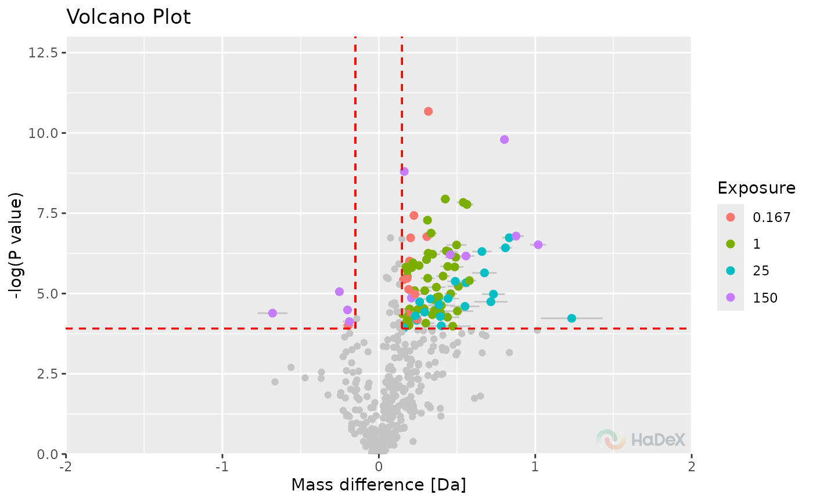
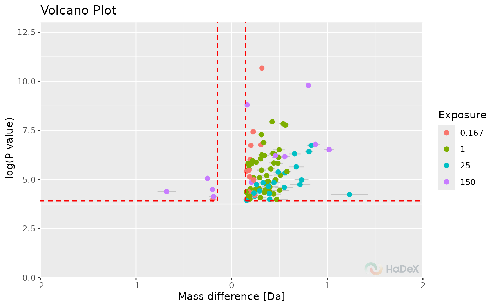

Volcano plot
plot_volcano.RdVolcano plot for differential deuterium uptake between two biological states
Usage
plot_volcano(
p_dat,
state_1 = "",
state_2 = "",
adjust_axes = TRUE,
show_confidence_limits = FALSE,
confidence_level = 0.98,
color_times = TRUE,
show_insignificant_grey = FALSE,
hide_insignificant = FALSE,
fractional = FALSE,
theoretical = FALSE,
interactive = getOption("hadex_use_interactive_plots")
)Arguments
- p_dat
data produced by the
create_p_diff_uptake_datasetfunction- state_1
selected biological state for given protein
- state_2
selected biological state for given protein
- adjust_axes
logical, indicator if the X-axis is symmetrical in relation to 0- show_confidence_limits
logical, indicates if the hybrid test confidence levels are shown- confidence_level
confidence level for the test, from range [0, 1]. It should be the same as used to prepare p_dat
- color_times
logical, indicator if different time points are distinguishable by color- show_insignificant_grey
logical, indicator if the values not passing the test are shown in grey- hide_insignificant
logical, indicator if the values not passing the test are hidden- fractional
logical, indicator if values are shown in fractional form- theoretical
logical, indicator if values are calculated using theoretical controls- interactive
logical, whether plot should have an interactive layer created with with ggiraph, which would add tooltips to the plot in an interactive display (HTML/Markdown documents or shiny app).
Details
The function plot_volcano generates the
volcano plot based on supplied p_dat.
On X-axis there is differential deuterium uptake in selected form.
On Y-axis there is the P-value from t-Student test between two
biological states. Based on selected confidence level, the confidence
limits are calculated to indicate statistically significant values -
shown as red dotted lines. The values that are in upper left and right
corners pass the hybrid test.
References
Hageman, T. S. & Weis, D. D. Reliable Identification of Significant Differences in Differential Hydrogen Exchange-Mass Spectrometry Measurements Using a Hybrid Significance Testing Approach. Anal Chem 91, 8008–8016 (2019).
Houde, D., Berkowitz, S.A., and Engen, J.R. (2011). The Utility of Hydrogen/Deuterium Exchange Mass Spectrometry in Biopharmaceutical Comparability Studies. J Pharm Sci 100, 2071–2086.
Examples
p_dat <- create_p_diff_uptake_dataset(alpha_dat)
plot_volcano(p_dat, show_confidence_limits = TRUE)
#> Warning: All aesthetics have length 1, but the data has 636 rows.
#> ℹ Please consider using `annotate()` or provide this layer with data containing
#> a single row.
#> Warning: All aesthetics have length 1, but the data has 636 rows.
#> ℹ Please consider using `annotate()` or provide this layer with data containing
#> a single row.
#> Warning: All aesthetics have length 1, but the data has 636 rows.
#> ℹ Please consider using `annotate()` or provide this layer with data containing
#> a single row.
#> Warning: All aesthetics have length 1, but the data has 636 rows.
#> ℹ Please consider using `annotate()` or provide this layer with data containing
#> a single row.
#> Warning: Removed 191 rows containing missing values or values outside the scale range
#> (`geom_point()`).
plot_volcano(p_dat, show_confidence_limits = TRUE, show_insignificant_grey = TRUE)
#> Warning: All aesthetics have length 1, but the data has 94 rows.
#> ℹ Please consider using `annotate()` or provide this layer with data containing
#> a single row.
#> Warning: All aesthetics have length 1, but the data has 94 rows.
#> ℹ Please consider using `annotate()` or provide this layer with data containing
#> a single row.
#> Warning: All aesthetics have length 1, but the data has 94 rows.
#> ℹ Please consider using `annotate()` or provide this layer with data containing
#> a single row.
#> Warning: All aesthetics have length 1, but the data has 94 rows.
#> ℹ Please consider using `annotate()` or provide this layer with data containing
#> a single row.
#> Warning: Removed 116 rows containing missing values or values outside the scale range
#> (`geom_point()`).

plot_volcano(p_dat, show_confidence_limits = TRUE, hide_insignificant = TRUE)
#> Warning: All aesthetics have length 1, but the data has 94 rows.
#> ℹ Please consider using `annotate()` or provide this layer with data containing
#> a single row.
#> Warning: All aesthetics have length 1, but the data has 94 rows.
#> ℹ Please consider using `annotate()` or provide this layer with data containing
#> a single row.
#> Warning: All aesthetics have length 1, but the data has 94 rows.
#> ℹ Please consider using `annotate()` or provide this layer with data containing
#> a single row.
#> Warning: All aesthetics have length 1, but the data has 94 rows.
#> ℹ Please consider using `annotate()` or provide this layer with data containing
#> a single row.
